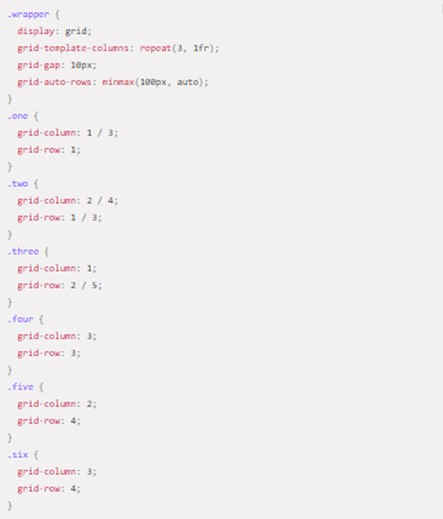
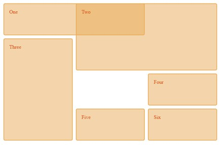

<!DOCTYPE html>
<html lang="en">
<head>
    <meta charset="UTF-8">
    <meta http-equiv="X-UA-Compatible" content="IE=edge">
    <meta name="viewport" content="width=device-width, initial-scale=1.0">
    <title>Document</title>
    <link rel="stylesheet" href="CSS/estilos.CSS">
</head>
<body>
    
</body>
</html>

<body>
    <header class="encabezado">
        <h1>
            Comprende las etiquetas semanticas, CSS Grid
        </h1>
    </header>
    <nav class="navegacion">
        <ul class="logo">
            <li><a href="">UBA 200</a></li>
        </ul>
        <ul class="menu">
            <li> <a href="index.html">Inicio</a></li>
            <li> <a href="">Temas</a>
                <ul class="submenu">
                    <li><a href="Tema 1.html">Etiquetas semanticas</a></li>
                    <li><a href="Tema 2.html">CSS Grid</a></li>
                </ul>
            <li>

            <li> <a href="">Recursos digitales</a>
                <ul class="submenu">
                    <li> <a href="recurso 1.html">Recurso 1</a></li>
                    <li> <a href="recurso 2.html">Recurso 2</a></li>
                </ul>
            <li>

            <li><a href="">Aprendizaje</a>
                <ul class="submenu">
                    <li><a href="actividad 1.html">Actividad 1</a></li>
                    <li><a href="actividad 2.html">Actividad 2</a></li>
                </ul>
            <li>

            <li><a href="Acerca de.html">Acerca de</a></li>
        </ul>

    </nav>

    <main class="contenedor">
        <aside class="lateral">
            <a class="twitter-timeline" data-height="450" data-theme="dark"
                href="https://twitter.com/UniversidadUNAD?ref_src=twsrc%5Etfw">Tweets by UniversidadUNAD</a>
            <script async src="https://platform.twitter.com/widgets.js" charset="utf-8"></script>
        </aside>
        <section class="principal">
            <article>
                <h2>CSS Grid </h2>
    
                <p>
                    <h3>CSS Grid Layout</h3> <br>
                    Contiene funciones de diseño dirigidas a los desarrolladores de aplicaciones web. El CSS Grid
                    se puede utilizar para lograr muchos diseños diferentes. Tambien se destaca por permitir dividir
                    una pagina en areas o regiones principales, por definir la relacion en terminos de tamaños, 
                    posicion y capas entre partes de un control construido a partir de primitivas HTML. 
                    <br>
                    Al igual que las tablas, el grid layout permite a un autor alinear elementos en columnas y
                    filas. Sin embargo, con CSS Grid son posibles muchos mas diseños y de forma mas sencilla que con
                    las tablas. Por ejemplo, los elementos secundarios de un contenedor de cuadricula podrian 
                    posicionarse para que se solapen y se superpongan, de forma similar a los elementos posicionados en CSS.
                    <br>
                    <br>
                    <h3>Ejemplo sencillo</h3>
                    <br>
    
                    El siguiente ejemplo muestra un grid de tres columnas con filas nuevas creadas con un minimo
                    de 100 pixeles y un maximo automatico. Los elementos se han colocado en el grid utilizando 
                    posicionamiento en linea.
                    <br>
                    <br>
                    <h3>HTML </h3>
                    <br>
                    
                        <br>
                        <br>
                      <h3>CSS</h3>
                        <br>
                      
                      <br>
    
                      
    
                      <h4>Referencias:</h4>
                      <h4>MDN contributors ( 19 agosto de 2021). CSS Grid Layout - MDN Web Docs. from: https://developer.mozilla.org/es/docs/Web/CSS/CSS_Grid_Layout </h4>
    
        </section>
    </main>
    <footer class="pie">
        <p>
            
            Skype: julieth parra diaz
            
            
            email: njparrad@unadvirtual.edu.co
            
            
            fecha: 22/09/2022
           
        </p>
        <h3>Referencias imagenes</h3>
        <br>
        <h5>
            Pngtree. (s. f.). Skype Icono Creativo PNG y Vector. Recuperado 25 de octubre de 2022, de https://es.pngtree.com/freepng/skype-creative-icon_3562046.html
        </h5>
        <br>
        <h5>
            CONTACTOS. (2020, 10 diciembre). Pasantías Uniojeda. https://pasantiasuniojeda.wordpress.com/contactos/
        </h5>
        <br>
        <h5>
            123RF. (s. f.). Productos cosméticos mejor antes del final de la fecha símbolo bbe. icono de reloj de arena negro. Recuperado 25 de octubre de 2022, de https://es.123rf.com/clipart-vectorizado/icono_de_fecha.html
        </h5>

    </footer>
</body>

</html>
